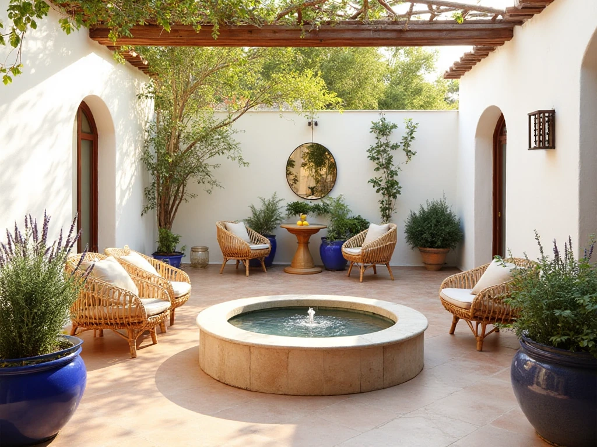
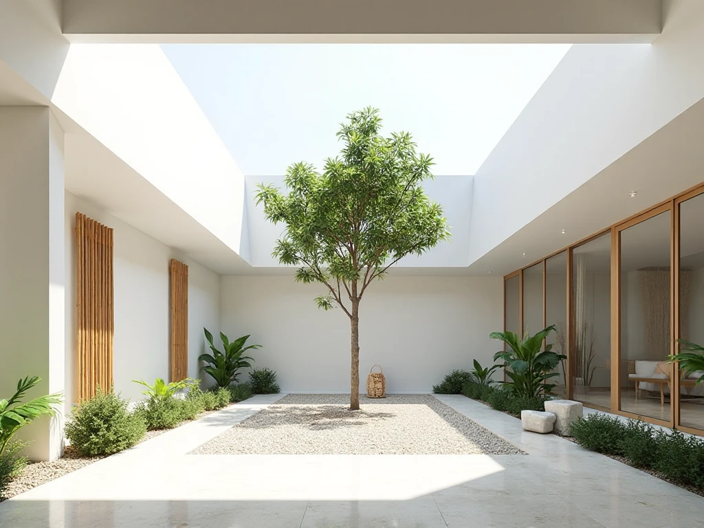

Proyectos Realizados
Algunos de nuestros proyectos destacados que reflejan la esencia de Patio Vivo.

Patio de Luz Natural
Diseño interior que integra vegetación y ventilación natural en una vivienda urbana.

Terraza Verde
Espacio elevado con vegetación nativa, ideal para el descanso y la contemplación.

Jardín Interior Minimalista
Ambiente sencillo, elegante y funcional que conecta la arquitectura con la naturaleza.